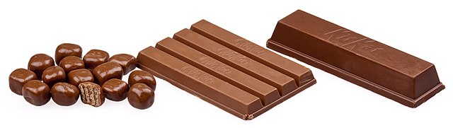
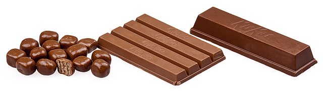

O Início
Na década de 1930, a empresa britânica de confeitaria Rowntree's fundou a KitKat no Reino Unido. A visão era criar uma barra de chocolate que pudesse ser consumida em qualquer lugar sem fazer bagunça, o que levou ao nascimento da KitKat.
Em 1935, uma delícia reconfortante chamada "Rowntree's Chocolate Crisp" chegou às prateleiras das lojas por todo o Reino Unido. Este delicioso lanche consistia em camadas de bolo wafer, cobertas com chocolate ao leite cremoso. Hoje em dia, todos nós o conhecemos e amamos como Nestlé KitKat. Este nome um tanto simples deriva do Kit Kat Club, um clube exclusivo do século XVIII para a elite londrina. O nome foi escolhido para adicionar um toque de sofisticação e grandiosidade a este lanche doce e suave.
Quando chegou a década de 1950, a marca KitKat foi distribuída para os países da Comunidade Britânica, como Austrália, Nova Zelândia, África do Sul, Rodésia e Canadá, onde a Rowntree já havia estabelecido presença. Até hoje, o KitKat continua sendo a primeira opção para quem precisa de um petisco rápido.
Com a ajuda de quatro comerciais de TV e uma campanha de imprensa, Donald Gillies, da agência de publicidade JWT, com sede em Londres, introduziu o slogan "Faça uma pausa, coma um Kit Kat" em 1958. Esse slogan cativante promovia o KitKat como o lanche ideal para fazer uma pausa e relaxar, mesmo que por apenas alguns segundos ou minutos, enquanto você saboreia a explosão dos vários ingredientes na boca.
Na década de 1980, a Nestlé, multinacional suíça de alimentos e bebidas, adquiriu a Rowntree's, a produtora original do KitKat. Desde então, a Nestlé assumiu a fabricação e a distribuição desse popular lanche, levando à sua ampla disponibilidade global. Atualmente, o KitKat é vendido em mais de 80 países e é uma das barras de chocolate mais populares do mundo. Ao longo dos anos, a Nestlé lançou uma variedade de sabores de KitKat para atender a diferentes gostos e preferências, a ponto de oferecer opções veganas e halal em alguns países.
Precisa de uma pausa?
KitKat oferece uma variedade de sabores, desde Chunky até Senses, e até mesmo as versões Dark e Mini.
A embalagem do KitKat se tornou a marca registrada da marca, com seus tons vibrantes de vermelho e branco e a icônica frase "Faça uma pausa, coma um KitKat".
O Nestlé KitKat tem sido uma barra de chocolate adorada e apreciada ao longo de sua existência, conhecida por sua deliciosa mistura de wafers crocantes e chocolate ao leite suave. Tornou-se um lanche clássico apreciado por pessoas de todas as idades e raças, graças aos seus conceitos inovadores, ingredientes de classe mundial e técnicas de marketing bem-sucedidas, que contribuíram para seu sucesso a longo prazo.
O KitKat nunca foi tão relevante quanto agora, especialmente em nosso mundo agitado e em constante mudança, quando combinado com o conselho direto de "Faça uma pausa, coma um KitKat".
Galeria
 
